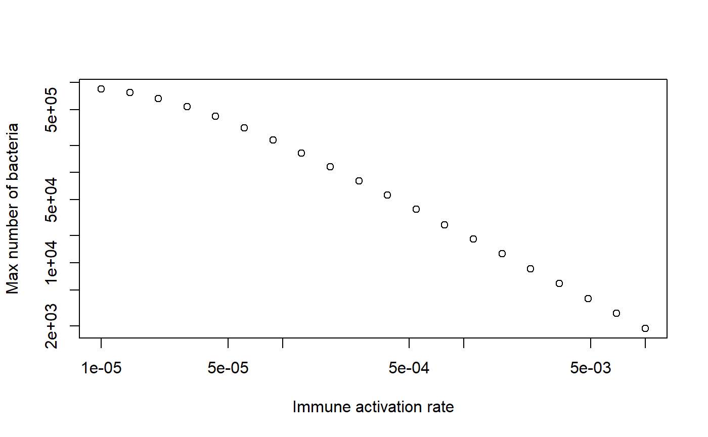
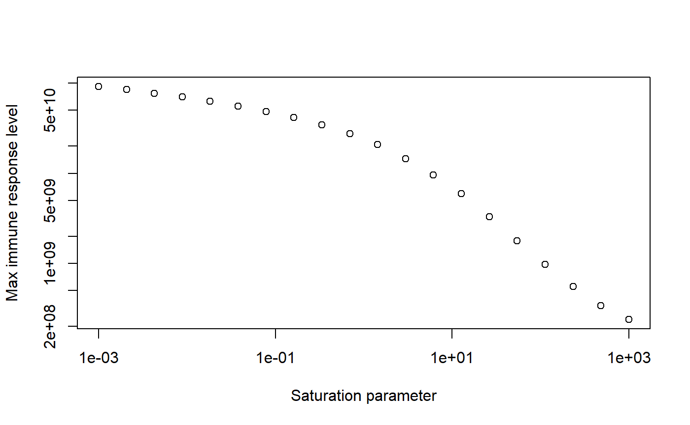

Dynamical Systems Approaches to Immune Response Modeling (DSAIRM) is an R package that allows individuals to explore and learn about dynamical systems modeling of within-host infection and immune response dynamics, by interacting with models through a graphical user interface. It is not necessary - though possible - to read or write computer code.
The idea behind the specific structure of the package is that it provides a gentle introduction to immune response modeling that starts with a graphical user interface and takes students slowly to more advanced levels.
The different use cases for the package are described below.
The package consists of several simulations/apps that allow for the simulation and exploration of different topics in within-host infection and immune response dynamics.
The underlying models are written as compartmental dynamical models, either deterministic using differential equations (deSolve package) or stochastic using a Gillespie-type approach (adaptivetau package). A graphical user interface is wrapped around each simulation/app. The graphical user interfaces are written using the functionality of the R Shiny package. This allows exploration of models without the need to write any code. At the same time, the package is structured in a modular way that should allow those interested in the actual models and learning R coding to easily move from one stage to another.
Each app is meant to be fully self-explanatory and contains a description of the model, a list of tasks the user could try, and information on further details and readings.
The main audience are individuals who want to learn how mechanistic, dynamical systems models can be used to study within-host infection dynamics. While the ideal use of this package is likely as component of a class on this topic, self-learning might also be possible. Each app contains a fair amount of documentation and description of the model. By reading the model description, doing the tasks and probably also reading some of the papers in the future information section, it might be possible to teach yourself the beginnings of within-host modeling on your own.
The package can be installed from CRAN or Github. See the documentation on the package page for more details.
Package installation is a one-time process, unless R itself is being upgraded/reinstalled. Note that the package depends on other packages, which will also be installed as needed.
The following sections describe the main envisioned ways the content in this R package can be used and extended. The idea is that everyone starts at level 1, and then, based on needs and interests, can decide to move on to the next level.
The interactive exploration of the models and infectious disease concepts through the graphical user interface is the main intended use of this package. The steps to get there are simple.
Every time a new R/Rstudio session is started, the package needs to be loaded:
library('DSAIRM')followed by starting the main menu for the package:
This will bring up a graphical menu from which one can select each Shiny app. Each app contains the information needed to understand the underlying model, and has a list of (non exhaustive) suggested tasks to learn about the topic covered by the app. After exploring an app, the user returns to the main menu and eventually exits the main menu and closes the R session. No code needs to be written at this level of exploration and learning.
If for some reason you do not want to go through the main menu, you can call individual apps directly with the function dsairmapps(). By typing
you will get a list of available apps. To start a specific app, supply its name in quotation marks to this function, e.g. if you wanted to call the basic bacteria app, you’d call
dsairmapps('BasicBacteria')Once you exit the app, you are back at the R console and can call the next app.
The exploration of the models through the graphical interface is the first and main intended use of the package. Once you are comfortable interacting with the models and have a good understanding of the concepts covered by the different apps, it is possible, without too much effort, to interact with the code more directly. This will provide more flexibility but will require writing some code.
To facilitate direct interaction and modification of the underlying simulations, each app is structured in such a way that the underlying model/simulation is a stand-alone function. For some apps, there are multiple underlying functions involved. You can call/use any of these functions directly, without going through the graphical interface. The ‘Further Information’ tab inside each app provides the name of the corresponding underlying function(s).
Consider as example the first app, called “Basic Bacterium Model”. This model has 2 underlying simulator functions, one that runs the discrete-time model called simulate_basicbacteria_discrete.R and one that runs the continuous, differential equation model called simulate_basicbacteria.R. If you were interested in the latter, you can learn about the inputs and outputs of the function by looking at its documentation. To that end, type the following into the R console (make sure you loaded the DSAIRM package first):
help('simulate_basicbacteria')The help file explains that one can run the simulation by specifying initial number of bacteria and immune response strength, the duration for which the simulation should be run, and the different model parameters. Unless explicitly specified, the models do not have inherent time units. Instead, those are set by the user based on choices for parameters. Each parameter has some default, which is used if one calls the fuction without any additional information. You can modify those default settings. For instance you could call the simulator with the following settings, overwriting the defaults for some of the parameters, while using the default values for the remainder:
result <- simulate_basicbacteria(B0 = 500, I0 = 5, tmax = 100, g = 0.5, r = 0.002)Calling the simulation function executes the underlying dynamical model. The simulation function produces and returns time-series for the dynamics of each of the variables that are tracked. It is now your job to produce their own plots. As example, a plot of bacteria as function of time could be achieved with this line of code:
plot(result$ts[,"Time"],result$ts[,"Bc"],xlab='Time',ylab='Bacteria Numbers',type='l')The ability to call the simulation functions directly instead of going through the graphical interface allows additional exploration of the models. For instance if one wanted to explore the behavior of a model systematically for different values of a given parameter, this would need to be done manually if run through the graphical interface. Calling the function directly allows one to automate this by wrapping the function inside a loop over the parameter of interest, recording some quantity of interest for each run, and report the result at the end. The following is a simple example, showing a loop over different values of the immune response activation rate and recording the peak of the bacteria numbers each time, with the final result peak of bacteria as function of immune activation rate shown in a plot:
rvec = 10^seq(-5,-2,length=20) #values of log immune activation rate, r, for which to run the simulation
peak = rep(0,length(rvec)) #this will record the peak values for each r
for (n in 1:length(rvec))
{
#call the simulator function with different values of g each time
result <- simulate_basicbacteria(B0 = 10, I0 = 1, tmax = 200, r = rvec[n])
peak[n] <- max(result$ts[,"Bc"]) #record max number of bacteria for each value of r
}
#plot final result
plot(rvec,peak,type='p',xlab='Immune activation rate',ylab='Max number of bacteria',log='xy')
Thus, you can add your own custom code to the existing simulator functions and with a few lines of extra code analyze and explore many more questions and scenarios than those accessible through the graphical interface. This provides a lot more flexibility, but requires writing some R code to interface with the supplied simulator functions.
As a next step, it is possible to not only interact with the simulation functions, but instead directly access the code and modify the underlying simulator functions. To make this easy, copies of all simulator functions are in a subdirectory called simulatorfunctions inside the DSAIRM package folder. Each function in that folder starts with simulate_. The following R code should tell you where on your computer the directory is that contains the simulator functions:
system.file("simulatorfunctions", package = "DSAIRM")While the functions in this subfolder are not used to run the code in the package, and one could therefore edit them without breaking the package, it is better to copy the whole folder to a new location. This way the chance of accidentally overwriting any modifications you make is reduced.
All simulator functions are (hopefully) well documented. Some basic to intermediate level of R coding experience is likely required to successfully modify the functions. In addition to modifying the simulator function of interest, you will likely also have to write some additional code to interact with your modified function (as described in Level 2).
The following provides a simple example of this process of modifying a simulator function and exploring its results. Assume that we want to modify the simple bacteria model encoded in simulate_basicbacteria.R. After finding the file and making a copy (let’s call the modified function mysimulator.R), we can make modifications. Say we want to change the immune activation/growth term by including saturation at some maximum rate when bacteria numbers are high, i.e. we want to change the term rBI to rBI/(B+s), which leads to a growth at rate rI if B is much larger than s.
We will need to modify the following lines of code in the R script:
old:
simulate_basicbacteria <- function(B0 = 10, I0 = 1, tmax = 30, g=1, Bmax=1e6, dB=1e-1, k=1e-7, r=1e-3, dI=1)new:
mysimulator <- function(B0 = 10, I0 = 1, tmax = 30, g=1, Bmax=1e6, dB=1e-1, k=1e-7, r=1e3, dI=1, s=1E3)Note that we changed the default value for r to ensure the immune response is sufficiently triggered.
old:
pars = c(g=g,Bmax=Bmax,dB=dB,k=k,r=r,dI=dI)new:
pars = c(g=g,Bmax=Bmax,dB=dB,k=k,r=r,dI=dI,s=s)old:
dBdt = g*B*(1-B/Bmax) - dB*B - k*B*I
dIdt = r*B*I - dI*Inew:
dBdt = g*B*(1-B/Bmax) - dB*B - k*B*I
dIdt = r*B*I/(s+B) - dI*IWe could now for instance explore how different values of the saturation parameter s impact the maximum level of the immune response. This requires a slight modification of the code shown above in Level 2 as follows:
source('mysimulator.R') #to initialize the new function - it needs to be in same directory as these lines of code
svec = 10^seq(-3,3,length=20) #values of saturation parameter
Imax = rep(0,length(svec)) #this will record the final immune response level
for (n in 1:length(svec))
{
result <- mysimulator(s = svec[n])
Imax[n] <- max(result$ts[,"Ic"])
}
plot(svec,Imax,type='p',xlab='Saturation parameter',ylab='Max immune response level',log='xy')
The package is built in a way that makes it (hopefully) easy for others to contribute new simulations/apps. To that end, the package contains a subfolder called docsfordevelopers, which provides information on how the apps are structured and how to add new ones. This Markdown file, documentation.md, provides further information.
This package is written and maintained by Andreas Handel, with contributions from others.